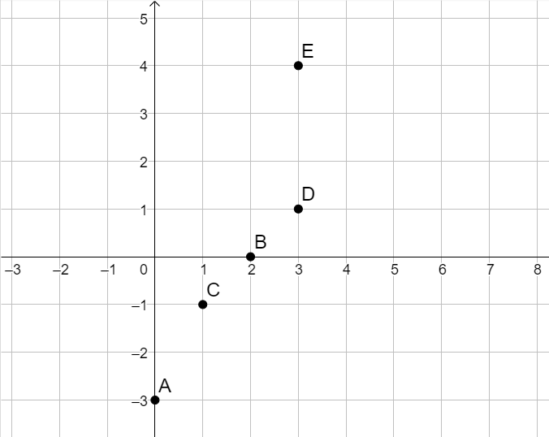
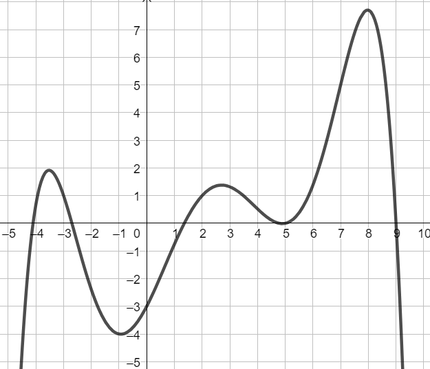
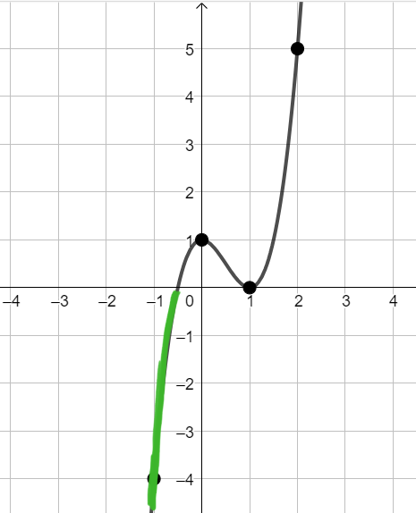
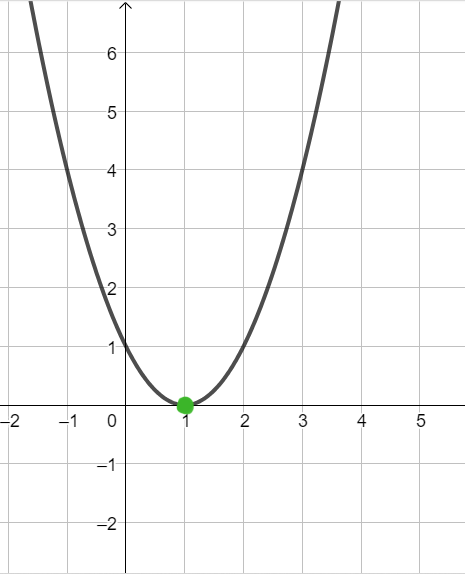
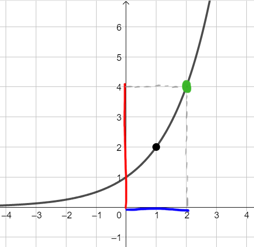

Consideriamo la funzione
\[
y = 2x^2 + 3
\]
Stabilire quali tra i seguenti punti appartiene al grafico della funzione.
Seleziona tra le seguenti tutte le affermazioni vere
Consideriamo funzione
\[
f(x) = 2^x - 4
\]
Osserviamo i punti rappresentati sul piano cartesiano.

Selezionare quale tra le seguenti affermazioni è vera.
Nella figura che segue è riportato il grafico di una funzione \(f\).

Selezionare tra le seguenti tutte le affermazioni vere.
Nell'immagine che segue è riportato il grafico di una funzione \(f\)
Seleziona tra le seguenti tutte le affermazioni vere
Considerati i seguenti grafici, selezionare tutti quelli che non possono rappresentare la funzione \[ y = 3^x \]
Osserviamo che la funzione \(y = 3^x\) assume valori positivi per qualsiasi scelta di \(x\).
Ciò significa che il grafico della funzione sarà sempre al di sopra dell'asse delle \(x\).
Di conseguenza, il grafico

non puà rappresentare la funzione, perché i punti evidenziati in verde hanno coordinata \(y\) negativa.
Neanche il grafico

può rappresentare la funzione, in quanto il punto evidenziato in verde ha coodinata \(y\) uguale \(0\).
Il terzo grafico,

assume tutti valori positivi, quindi potrebbe rappresentare la funzione. Tuttavia, esaminando
il punto evidenziato in verde, osserviamo che la sua ordinata, \(y = 4\) non corrisponde al valore che la funzione
\(y = 3^x\) assume se \(x = 2\). Infatti \(y = 3^2 = 9\).
La funzione \(f\) ha il seguente grafico